<title>BlackHole-Dev</title>
<meta name="claude:viewport-fit-sides" content="cover">
<meta name="description" content="BlackHole-Dev: a desktop app for shrinking open-weight models with short Python recipes. REAP pruning, HEX per-expert codebooks, distillation. Qwen3.6-35B-A3B at 9.8 GB, 67.8 tok/s on a 16 GB MacBook Air. Open source, Apache-2.0.">
<link rel="preconnect" href="https://fonts.googleapis.com">
<link rel="preconnect" href="https://fonts.gstatic.com" crossorigin>
<link rel="stylesheet" href="https://fonts.googleapis.com/css2?family=Chakra+Petch:wght@500;600;700&family=IBM+Plex+Sans:wght@400;500;600&family=JetBrains+Mono:wght@400;600&display=swap">
<style>
/* Layout: one dark column falling toward the hole. Hero = live terminal render of the
   black hole + banner, then the app itself: a big screenshot, a tour of the editor, install. Then the
   recipes (easy ones, then the best builds), and the measured results last. Deliberately
   single-theme: the page is the inside of the TUI. */
:root {
  color-scheme: dark;
  --void: #000000;     /* event horizon: background */
  --ash: #4a0d02;      /* quiet borders */
  --crimson: #9e1b07;  /* frames */
  --redshift: #d7261e; /* warnings, negatives */
  --ember: #ff6a00;    /* primary */
  --flare: #ffae42;    /* highlights */
  --photon: #f5efe6;   /* the bit of white */
  --text: #f0dccb;     /* body */
  --dim: #a2735b;      /* secondary text (lifted from TUI dim for contrast on web) */
  --panel: #0c0402;    /* faint lit surface */
  --display: "Chakra Petch", "Arial Narrow", system-ui, sans-serif;
  --body: "IBM Plex Sans", system-ui, -apple-system, "Segoe UI", sans-serif;
  --mono: "JetBrains Mono", ui-monospace, "SFMono-Regular", Menlo, Consolas, monospace;
  --wrap: 1120px;
}
* { box-sizing: border-box; }
html { background: var(--void); }
body { margin: 0; background: var(--void); color: var(--text); font: 400 17px/1.6 var(--body); }
a { color: var(--flare); text-underline-offset: 3px; }
a:focus-visible, button:focus-visible { outline: 2px solid var(--flare); outline-offset: 3px; }
::selection { background: var(--ember); color: var(--void); }

.wrap { max-width: var(--wrap); margin: 0 auto;
  padding-left: max(16px, env(safe-area-inset-left, 0px));
  padding-right: max(16px, env(safe-area-inset-right, 0px)); }
section { padding-block: 88px 0; }
.eyebrow { font: 600 12px/1 var(--mono); letter-spacing: .14em; text-transform: uppercase; color: var(--ember); display: flex; align-items: center; gap: 10px; }
.eyebrow::before { content: ""; width: 8px; height: 8px; background: var(--ember); border-radius: 50%; box-shadow: 0 0 10px var(--ember); }
h1, h2, h3 { font-family: var(--display); color: var(--photon); text-wrap: balance; margin: 0; letter-spacing: -.01em; }
h2 { font-size: clamp(30px, 4.4vw, 46px); line-height: 1.05; font-weight: 700; margin-top: 16px; max-width: 22ch; }
h3 { font-size: 21px; font-weight: 600; line-height: 1.2; }
p { margin: 0; }
.lede { color: var(--text); max-width: 62ch; margin-top: 18px; }
.muted { color: var(--dim); }
code, .mono { font-family: var(--mono); font-size: .88em; }

/* ── nav ───────────────────────────────────────── */
.top { position: sticky; top: env(safe-area-inset-top, 0px); z-index: 5; background: rgba(0,0,0,.86); backdrop-filter: blur(6px); border-bottom: 1px solid var(--ash); }
body::before { content: ""; position: fixed; inset: 0 0 auto; height: env(safe-area-inset-top, 0px); z-index: 10; background: var(--void); }
.top .wrap { display: flex; align-items: center; justify-content: space-between; gap: 16px; height: 56px; }
.brand { font: 700 18px/1 var(--display); color: var(--photon); text-decoration: none; display: flex; align-items: center; gap: 10px; letter-spacing: .02em; }
.brand svg { width: 24px; height: 24px; flex: none; }
.brand b { color: var(--ember); font-weight: 700; }
.top nav { display: flex; gap: 22px; font: 500 14px/1 var(--mono); }
.top nav a { color: var(--dim); text-decoration: none; }
.top nav a:hover { color: var(--flare); }
@media (max-width: 720px) { .top nav a:not(.gh) { display: none; } }

/* ── hero ──────────────────────────────────────── */
.hero { padding-block: 48px 0; }
.banner svg { display: block; width: 100%; max-width: 700px; height: auto; }
.banner text { font: 600 1.7px var(--mono); fill: var(--photon); }
.hero-grid { display: grid; grid-template-columns: minmax(0, 1fr) minmax(0, 1.05fr); gap: 40px; align-items: center; margin-top: 34px; }
.hero h1 { font-size: clamp(38px, 6vw, 68px); line-height: .98; font-weight: 700; }
.hero h1 em { font-style: normal; color: var(--ember); }
.hero .lede { font-size: 18px; }
.hole { display: flex; justify-content: center; min-width: 0; }
.hole canvas { display: block; }
.cta { display: flex; flex-wrap: wrap; gap: 12px; margin-top: 30px; align-items: stretch; }
.cmd { display: flex; align-items: center; gap: 12px; background: var(--panel); border: 1px solid var(--crimson); padding: 12px 12px 12px 16px; font: 400 15px/1.2 var(--mono); color: var(--photon); min-width: 0; max-width: 100%; }
.cmd .p { color: var(--ember); }
.cmd code { font-size: inherit; overflow-x: auto; white-space: nowrap; }
.copy { font: 600 12px/1 var(--mono); text-transform: uppercase; letter-spacing: .1em; background: transparent; color: var(--flare); border: 1px solid var(--ash); padding: 8px 10px; cursor: pointer; flex: none; }
.copy:hover { background: var(--ember); color: var(--void); border-color: var(--ember); }
.btn { display: inline-flex; align-items: center; font: 600 15px/1 var(--mono); padding: 0 20px; min-height: 48px; background: var(--ember); color: var(--void); text-decoration: none; }
.btn:hover { background: var(--flare); }
.status { margin-top: 18px; font: 400 13px/1.5 var(--mono); color: var(--dim); }
.status b { color: var(--flare); font-weight: 600; }

/* ── facts strip ───────────────────────────────── */
.facts { margin-top: 36px; border-block: 1px solid var(--ash); display: grid; grid-template-columns: repeat(4, minmax(0, 1fr)); }
.fact { padding-block: 22px; padding-right: 16px; }
.fact + .fact { border-left: 1px solid var(--ash); padding-left: 20px; }
.fact .n { font: 700 30px/1 var(--display); color: var(--photon); font-variant-numeric: tabular-nums; }
.fact .n small { font-size: 16px; color: var(--ember); margin-left: 2px; }
.fact .l { font-size: 14px; color: var(--dim); margin-top: 8px; }
@media (max-width: 760px) {
  .facts { grid-template-columns: repeat(2, minmax(0, 1fr)); }
  .fact:nth-child(3) { border-left: 0; padding-left: 0; }
  .fact:nth-child(n+3) { border-top: 1px solid var(--ash); }
}

/* ── results chart ─────────────────────────────── */
.chart { margin-top: 40px; display: grid; gap: 34px; }
.model h3 { display: flex; flex-wrap: wrap; align-items: baseline; gap: 4px 12px; }
.model h3 span { font: 400 13px/1 var(--mono); color: var(--dim); }
.rows { margin-top: 14px; display: grid; gap: 10px; }
.row { display: grid; grid-template-columns: 210px minmax(0, 1fr) 118px; gap: 16px; align-items: center; }
.row .name { font-size: 14px; color: var(--text); line-height: 1.3; }
.row .name b { color: var(--photon); font-weight: 600; display: block; }
.track { position: relative; height: 28px; background: repeating-linear-gradient(90deg, transparent 0 calc(10% - 1px), #1a0703 calc(10% - 1px) 10%); }
.bar { height: 100%; width: var(--w); background: var(--ash); display: flex; align-items: center; }
.bar.ours { background: linear-gradient(90deg, var(--crimson), var(--ember) 70%, var(--flare)); box-shadow: 0 0 18px rgba(255,106,0,.35); }
.bar.old { background: var(--crimson); }
.gb { position: absolute; top: 50%; transform: translateY(-50%); left: calc(var(--w) + 10px); font: 600 14px/1 var(--mono); color: var(--photon); font-variant-numeric: tabular-nums; white-space: nowrap; }
.row.full .gb { left: auto; right: 10px; color: var(--photon); }
.kl { font: 400 13px/1 var(--mono); color: var(--dim); font-variant-numeric: tabular-nums; text-align: right; white-space: nowrap; }
.kl b { font-weight: 600; }
.kl.good b { color: var(--flare); }
.kl.bad b { color: var(--redshift); }
.axis { display: grid; grid-template-columns: 210px minmax(0, 1fr) 118px; gap: 16px; font: 400 12px/1 var(--mono); color: var(--dim); }
.axis div { display: flex; justify-content: space-between; font-variant-numeric: tabular-nums; }
.note { margin-top: 26px; font-size: 14px; color: var(--dim); max-width: 75ch; }
@media (max-width: 680px) {
  .row, .axis { grid-template-columns: minmax(0, 1fr) auto; gap: 6px 12px; }
  .row .name { grid-column: 1 / -1; }
  .axis > span:first-child { display: none; }
  .axis > span:last-child { display: none; }
}

.lessons { margin-top: 44px; display: grid; grid-template-columns: repeat(3, minmax(0, 1fr)); gap: 0; border-top: 1px solid var(--ash); }
.lesson { padding: 20px 20px 0 0; }
.lesson + .lesson { padding-left: 20px; border-left: 1px solid var(--ash); }
.lesson .tag { font: 600 11px/1 var(--mono); letter-spacing: .12em; text-transform: uppercase; }
.lesson .tag.win { color: var(--flare); }
.lesson .tag.loss { color: var(--redshift); }
.lesson p { margin-top: 10px; font-size: 15px; }
@media (max-width: 760px) {
  .lessons { grid-template-columns: minmax(0, 1fr); }
  .lesson + .lesson { padding-left: 0; border-left: 0; border-top: 1px solid var(--ash); margin-top: 20px; }
}

/* ── terminal / screenshots ────────────────────── */
.term { border: 1px solid var(--crimson); background: var(--panel); }
.term .bar-t { display: flex; justify-content: space-between; border-bottom: 1px solid var(--ash); padding: 8px 14px; font: 400 12px/1 var(--mono); color: var(--dim); }
.term pre { margin: 0; padding: 18px; overflow-x: auto; font: 400 14px/1.75 var(--mono); color: var(--photon); }
.term .c { color: var(--dim); }
.term .p { color: var(--ember); }
.term .o { color: var(--flare); }
.shot { margin: 0; border: 1px solid var(--ash); background: #050100; }
.shot img { display: block; width: 100%; height: auto; }
.shot figcaption { font: 400 13px/1.5 var(--mono); color: var(--dim); padding: 10px 14px; border-top: 1px solid var(--ash); }

/* ── recipes ───────────────────────────────────── */
.btn.ghost { background: transparent; color: var(--flare); border: 1px solid var(--crimson); }
.btn.ghost:hover { background: var(--ember); color: var(--void); border-color: var(--ember); }
.best { margin-top: 40px; display: grid; grid-template-columns: minmax(0, .8fr) minmax(0, 1.2fr); gap: 32px; align-items: start; }
@media (max-width: 900px) { .best { grid-template-columns: minmax(0, 1fr); } }
.best-info { display: grid; gap: 14px; }
.best-info h3 { display: flex; flex-wrap: wrap; align-items: baseline; gap: 6px 12px; font-size: 24px; }
.best-info p { font-size: 15.5px; }
.tag-ok { font: 600 11px/1 var(--mono); letter-spacing: .12em; text-transform: uppercase; color: var(--flare); border: 1px solid var(--ash); padding: 5px 7px; }
.stats { margin: 4px 0 0; display: grid; grid-template-columns: repeat(2, minmax(0, 1fr)); border-top: 1px solid var(--ash); border-left: 1px solid var(--ash); }
.stats div { border-right: 1px solid var(--ash); border-bottom: 1px solid var(--ash); padding: 12px 14px; min-width: 0; }
.stats dt { font: 400 12px/1.3 var(--mono); color: var(--dim); }
.stats dd { margin: 6px 0 0; font: 700 22px/1.1 var(--display); color: var(--photon); font-variant-numeric: tabular-nums; }
.stats dd i { display: block; font: 400 12px/1.3 var(--mono); color: var(--dim); font-style: normal; margin-top: 4px; }
.fine { font-size: 13.5px; color: var(--dim); }
.term.code { min-width: 0; display: flex; flex-direction: column; }
.term.code .bar-t { align-items: center; gap: 12px; padding: 6px 8px 6px 14px; line-height: 1.3; }
.term.code .bar-t > span:first-child { min-width: 0; overflow: hidden; text-overflow: ellipsis; white-space: nowrap; }
.acts { display: flex; align-items: center; gap: 12px; flex: none; }
.acts a { color: var(--dim); text-decoration: none; font: 400 12px/1 var(--mono); }
.acts a:hover { color: var(--flare); }
.term.code .copy { padding: 6px 9px; }
.term pre { font-variant-ligatures: none; }
.term pre.py { font-size: 13px; line-height: 1.65; tab-size: 4; }
.easy pre.py { font-size: 12.5px; }
pre.tall { max-height: 520px; overflow: auto; }
.py .n { color: var(--flare); }
.easy { margin-top: 36px; display: grid; grid-template-columns: repeat(2, minmax(0, 1fr)); gap: 20px; align-items: start; }
.easy .wide { grid-column: 1 / -1; }
@media (max-width: 900px) { .easy { grid-template-columns: minmax(0, 1fr); } }
.installs { margin-top: 32px; display: grid; grid-template-columns: minmax(0, 1fr); gap: 18px; max-width: 820px; }
.step-i { display: grid; grid-template-columns: 30px minmax(0, 1fr); gap: 10px; }
.step-i > span { font: 700 20px/1.6 var(--display); color: var(--ember); }
.step-i pre { white-space: pre; }

/* ── techniques ────────────────────────────────── */
.techs { margin-top: 44px; display: grid; grid-template-columns: repeat(4, minmax(0, 1fr)); gap: 1px; background: var(--ash); border: 1px solid var(--ash); }
.tech { background: var(--void); padding: 22px 20px 24px; display: grid; gap: 10px; align-content: start; min-width: 0; }
.tech .ab { font: 700 26px/1 var(--display); color: var(--ember); letter-spacing: .02em; display: flex; align-items: baseline; gap: 10px; flex-wrap: wrap; }
.tech .ab span { font: 600 10.5px/1 var(--mono); letter-spacing: .12em; text-transform: uppercase; color: var(--flare); border: 1px solid var(--ash); padding: 4px 6px; }
.tech .full { font: 400 12.5px/1.4 var(--mono); color: var(--dim); }
.tech p { font-size: 15px; }
.tech .proof { font: 400 12.5px/1.5 var(--mono); color: var(--text); border-left: 2px solid var(--ember); padding-left: 10px; }
@media (max-width: 900px) { .techs { grid-template-columns: repeat(2, minmax(0, 1fr)); } }
@media (max-width: 560px) { .techs { grid-template-columns: minmax(0, 1fr); } }

/* ── dev app ───────────────────────────────────── */
.hero-shot { margin-top: 56px; border-color: var(--crimson); box-shadow: 0 30px 120px -20px rgba(255,106,0,.28); }
.tour { display: grid; grid-template-columns: minmax(0, .72fr) minmax(0, 1.28fr); gap: 44px; align-items: center; margin-top: 64px; }
.tour.flip > .tour-text { order: 2; }
.tour.flip { grid-template-columns: minmax(0, 1.28fr) minmax(0, .72fr); }
.tour-text h3 { font-size: 26px; margin-top: 10px; }
.tour-text p { margin-top: 12px; font-size: 15.5px; }
.tour-text .num { font: 600 12px/1 var(--mono); letter-spacing: .14em; color: var(--ember); }
.tour-text code { color: var(--flare); }
.tour-themes { margin-top: 64px; display: grid; grid-template-columns: minmax(0, .72fr) minmax(0, 1.28fr); gap: 44px; align-items: center; }
.tour-themes .themes { margin-top: 0; }
@media (max-width: 900px) {
  .tour, .tour.flip, .tour-themes { grid-template-columns: minmax(0, 1fr); gap: 22px; margin-top: 52px; }
  .tour.flip > .tour-text { order: 0; }
}
.feats { list-style: none; padding: 0; margin: 24px 0 0; display: grid; gap: 14px; }
.feats li { font-size: 15px; padding-left: 18px; position: relative; }
.feats li::before { content: ""; position: absolute; left: 0; top: .62em; width: 7px; height: 7px; background: var(--ember); }
.feats b { color: var(--photon); font-weight: 600; }
.themes { margin-top: 20px; display: grid; grid-template-columns: repeat(4, minmax(0, 1fr)); gap: 10px; }
.themes figure { margin: 0; border: 1px solid var(--ash); background: #050100; min-width: 0; }
.themes img { display: block; width: 100%; height: auto; aspect-ratio: 55 / 28; }
.themes figcaption { font: 400 12px/1 var(--mono); color: var(--dim); padding: 8px 10px; border-top: 1px solid var(--ash); }
@media (max-width: 760px) { .themes { grid-template-columns: repeat(2, minmax(0, 1fr)); } }
.py .k { color: var(--flare); }
.py .s { color: var(--text); }
.py .f { color: var(--ember); }
.py .c { color: var(--dim); }

/* ── footer ────────────────────────────────────── */
.end { margin-top: 110px; border-top: 1px solid var(--ash); }
.end .wrap { padding-block: 36px 48px; display: flex; flex-wrap: wrap; justify-content: space-between; gap: 20px; font: 400 13px/1.6 var(--mono); color: var(--dim); }
.end a { color: var(--dim); }
.end a:hover { color: var(--flare); }

@media (max-width: 900px) {
  .hero-grid { grid-template-columns: minmax(0, 1fr); }
  .hole { order: -1; }
}
.hero .cmd { flex: 1 1 100%; font-size: 14px; justify-content: space-between; }
@media (max-width: 520px) { .cmd { font-size: 13px; gap: 8px; padding-left: 12px; } }
@media (prefers-reduced-motion: reduce) { * { scroll-behavior: auto !important; } }
</style>

<header class="top">
  <div class="wrap">
    <a class="brand" href="#top" aria-label="BlackHole-Dev home"><svg viewBox="0 0 24 24" aria-hidden="true"><defs><radialGradient id="mt" gradientUnits="userSpaceOnUse" cx="12" cy="12" r="7.63"><stop offset="0.49" stop-color="#ffae42"/><stop offset="0.64" stop-color="#ff6a00"/><stop offset="0.81" stop-color="#d7261e"/><stop offset="0.92" stop-color="#9e1b07"/><stop offset="1" stop-color="#9e1b07" stop-opacity="0"/></radialGradient><radialGradient id="mb" gradientUnits="userSpaceOnUse" cx="12" cy="12" r="5.95"><stop offset="0.62" stop-color="#ff6a00"/><stop offset="0.79" stop-color="#d7261e"/><stop offset="1" stop-color="#9e1b07" stop-opacity="0"/></radialGradient><linearGradient id="md" gradientUnits="userSpaceOnUse" x1="0.47" y1="0" x2="23.53" y2="0"><stop offset="0" stop-color="#9e1b07"/><stop offset=".22" stop-color="#ff6a00"/><stop offset=".42" stop-color="#f5efe6"/><stop offset=".6" stop-color="#ffae42"/><stop offset=".8" stop-color="#d7261e"/><stop offset="1" stop-color="#9e1b07"/></linearGradient></defs><path d="M0.47 12A11.53 2.65 0 0 1 23.53 12L17.21 12A5.21 1.2 0 0 0 6.79 12Z" fill="url(#md)"/><path d="M0.47 12A11.53 2.65 0 0 1 23.53 12L17.21 12A5.21 1.2 0 0 0 6.79 12Z" fill="#000000" fill-opacity=".45"/><path d="M4.37 12A7.63 7.63 0 0 1 19.63 12L15.72 12A3.72 3.72 0 0 0 8.28 12Z" fill="url(#mt)"/><path d="M6.05 12A5.95 5.95 0 0 0 17.95 12L15.72 12A3.72 3.72 0 0 1 8.28 12Z" fill="url(#mb)"/><circle cx="12" cy="12" r="3.72" fill="#000000"/><circle cx="12" cy="12" r="4.06" fill="none" stroke="#f5efe6" stroke-width="0.68"/><path d="M0.47 12A11.53 2.65 0 0 0 23.53 12L17.21 12A5.21 1.2 0 0 1 6.79 12Z" fill="url(#md)"/></svg>BlackHole<b>·</b>Dev</a>
    <nav aria-label="Sections">
      <a href="#app">the app</a>
      <a href="#install">install</a>
      <a href="#easy">recipes</a>
      <a href="#results">results</a>
      <a class="gh" href="https://github.com/OliverVillson/BlackHole-Harness">github ↗</a>
    </nav>
  </div>
</header>

<main id="top">
  <div class="hero">
    <div class="wrap">
      <div class="banner" id="banner" role="img" aria-label="BLACKHOLE dev"></div>
      <div class="hero-grid">
        <div>
          <h1>Write the recipe. <em>Collapse the model.</em></h1>
          <p class="lede">BlackHole-Dev is a code editor for shrinking open-weight models until they fit your machine. Open any model as parts, write a short Python recipe with completions and a copilot, plan it on your laptop, run it on a GPU box, then chat with what you made.</p>
          <div class="cta">
            <a class="btn" href="#install">Install it</a>
            <a class="btn ghost" href="#app">Tour the app</a>
          </div>
          <p class="status"><b>open source</b> · Apache-2.0 · macOS on Apple silicon first · built on the BlackHole-Harness pipeline</p>
        </div>
        <div class="hole"><canvas id="hole" role="img" aria-label="A black hole drawn in orange and red pixels, with a tilted accretion disk"></canvas></div>
      </div>
    </div>
  </div>
  <div class="wrap">
    <figure class="shot hero-shot">
      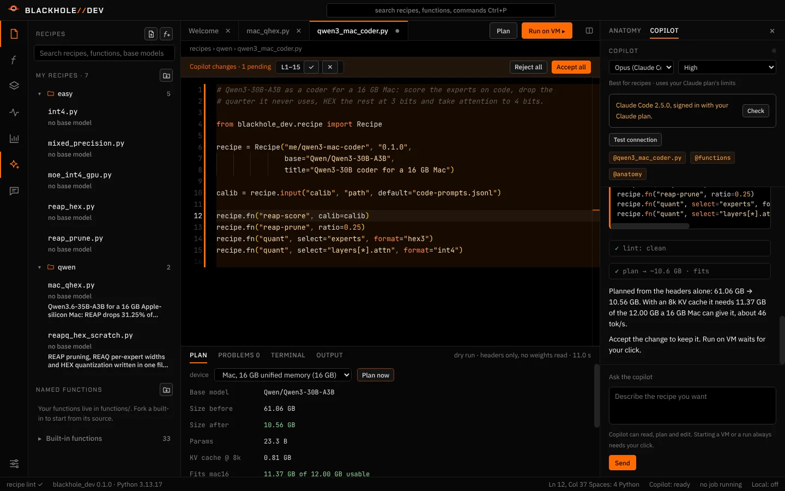
      <figcaption>Asked for a 16 GB Mac build, the copilot wrote this recipe as a pending change. Plan sized it from the headers alone: Qwen3-30B-A3B, 61 GB → 10.6 GB.</figcaption>
    </figure>
  </div>

  <section id="app">
    <div class="wrap">
      <div class="eyebrow">The app</div>
      <h2>An editor for taking models apart</h2>
      <p class="lede">BlackHole-Dev opens any model as parts: layers, heads, routers, experts with their REAP scores, neurons, single weights. Recipes edit those parts with named functions, and Plan sizes the result from the model's headers before a GPU is ever rented.</p>

      <div class="tour">
        <div class="tour-text">
          <span class="num">01</span>
          <h3>Recipes in a real editor</h3>
          <p>Monaco, the editor inside VS Code, taught the recipe language. Function names complete as you type <code>recipe.fn("</code>, then their arguments with signature help and defaults.</p>
          <ul class="feats">
            <li><b>Completions, snippets and inline lint</b> for every built-in and every function you write.</li>
            <li><b>Split tab groups</b>: drag a tab to an edge, drag the divider, <code>⌘⌥J</code> folds them back.</li>
            <li><b>Command palette</b> <code>⌘⇧P</code>, quick open <code>⌘P</code>, recipe folders in the side bar.</li>
          </ul>
        </div>
        <figure class="shot">
          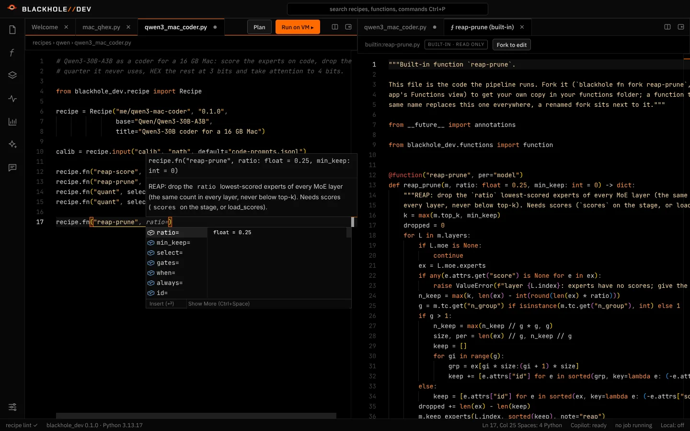
          <figcaption>Arguments for <code>reap-prune</code> as you type, its source open in a second group.</figcaption>
        </figure>
      </div>

      <div class="tour flip">
        <div class="tour-text">
          <span class="num">02</span>
          <h3>A copilot that edits, you decide</h3>
          <p>Ask for a recipe in a sentence. The copilot reads the model, writes the file, lints and plans it on its own, and every change lands in your editor as a pending diff you accept or reject.</p>
          <ul class="feats">
            <li><b>Claude Code</b> with your own subscription, <b>your own Anthropic key</b>, or a <b>local model</b>.</li>
            <li>Starting a VM, launching a run or a big download <b>always waits for your click</b>.</li>
          </ul>
        </div>
        <figure class="shot">
          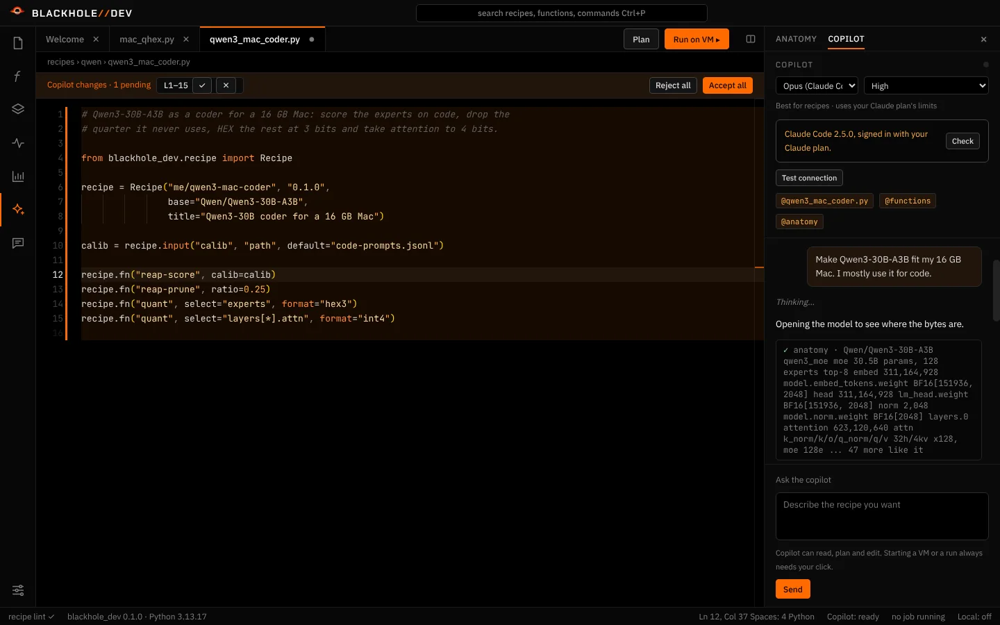
          <figcaption>One sentence in, the copilot opens the model before it writes a line.</figcaption>
        </figure>
      </div>

      <div class="tour">
        <div class="tour-text">
          <span class="num">03</span>
          <h3>Look inside before you cut</h3>
          <p>The anatomy view walks the model down to single experts and their REAP rank. The analysis panel draws what each recipe step will touch, from the headers or one calibration pass.</p>
          <ul class="feats">
            <li><b>Analysis</b>: REAP heatmaps, router usage, weight stats, quantization error by format, two models side by side.</li>
            <li><b>Plan</b>: size, fit, KV cache and GPU time for your device, before anything runs.</li>
          </ul>
        </div>
        <figure class="shot">
          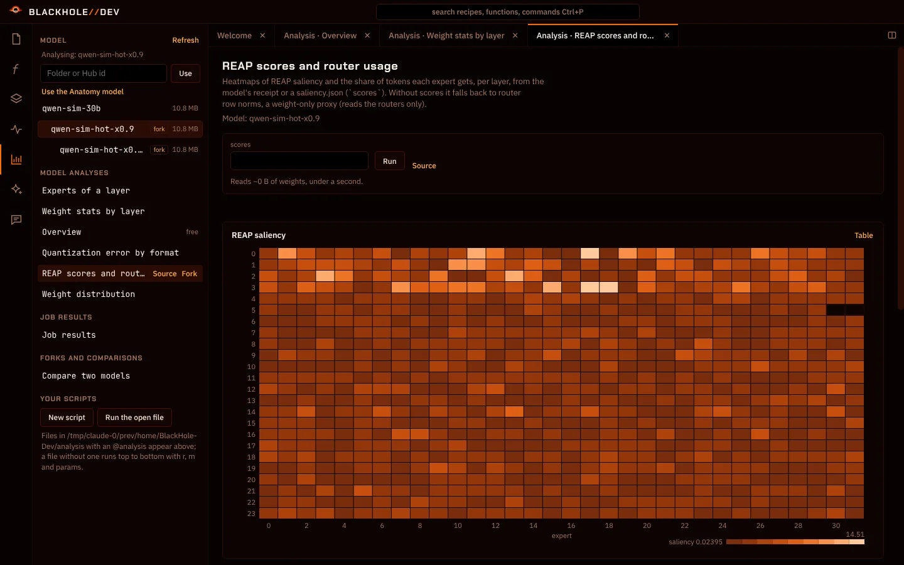
          <figcaption>REAP saliency per layer and expert, here on a small test MoE.</figcaption>
        </figure>
      </div>

      <div class="tour flip">
        <div class="tour-text">
          <span class="num">04</span>
          <h3>Run it on a GPU box, chat with it at home</h3>
          <p>Run on VM bundles the recipe and your functions, checks the machine over SSH, shows the exact command, and starts it in tmux. The job monitor follows each stage live.</p>
          <ul class="feats">
            <li><b>Your own SSH hosts</b> or VMs started with <code>blackhole up</code>, stopped or deleted from the app.</li>
            <li><b>Chat locally</b> with the result through any OpenAI-compatible server, such as <code>mlx_lm.server</code>.</li>
          </ul>
        </div>
        <figure class="shot">
          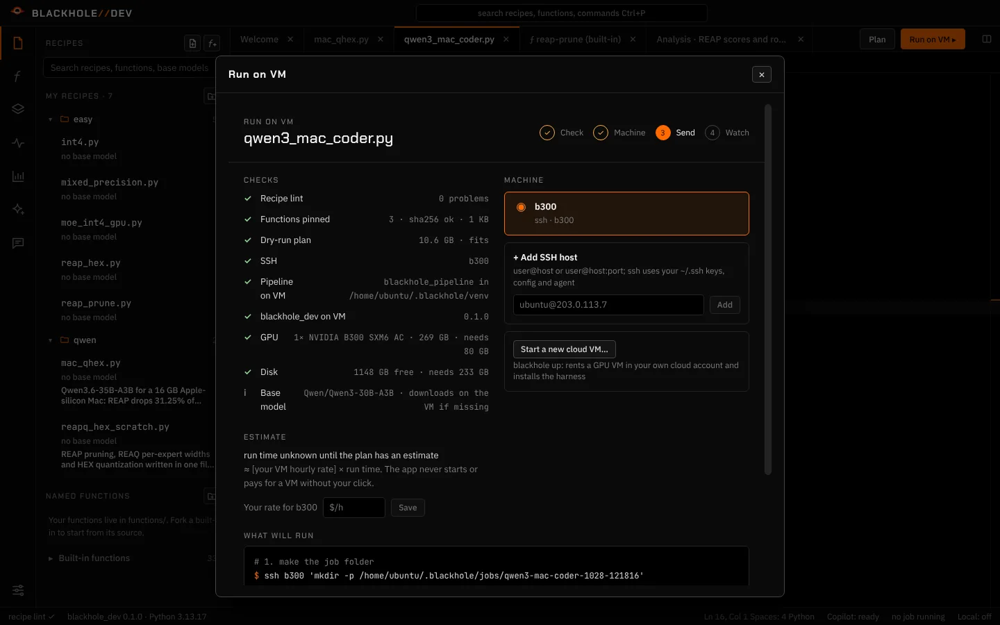
          <figcaption>Every check and every command, before anything starts on the machine.</figcaption>
        </figure>
      </div>

      <div class="tour-themes">
        <div class="tour-text">
          <span class="num">05</span>
          <h3>36 themes</h3>
          <p>From Singularity, the black and ember default, to Lab Paper. Every panel and the editor repaint together.</p>
        </div>
        <div class="themes">
          <figure>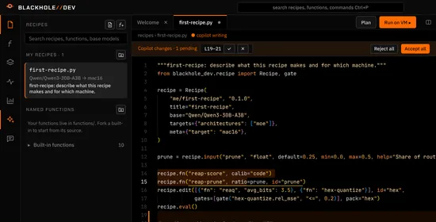<figcaption>Singularity</figcaption></figure>
          <figure>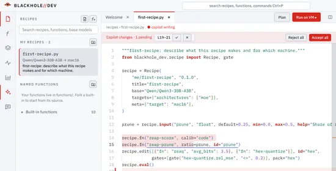<figcaption>Lab Paper</figcaption></figure>
          <figure>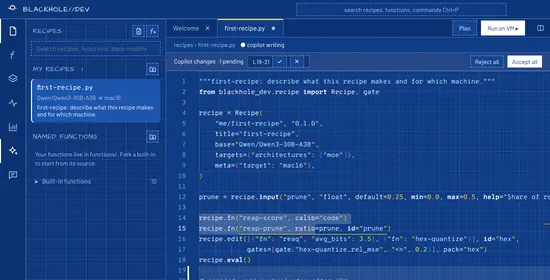<figcaption>Blueprint</figcaption></figure>
          <figure>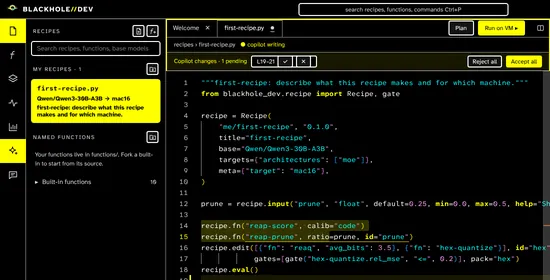<figcaption>Pulsar</figcaption></figure>
          <figure>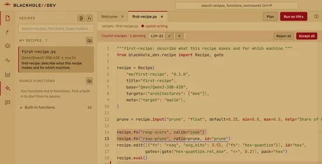<figcaption>Dune</figcaption></figure>
          <figure>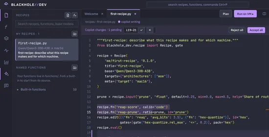<figcaption>Dracula</figcaption></figure>
          <figure>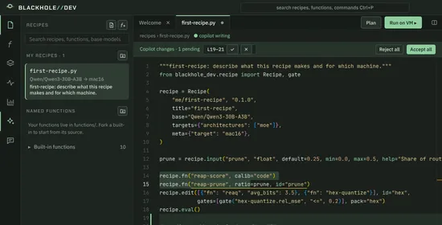<figcaption>Canopy</figcaption></figure>
          <figure>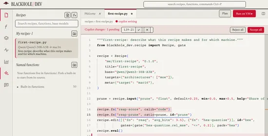<figcaption>Broadsheet</figcaption></figure>
        </div>
      </div>
    </div>
  </section>

  <section id="install">
    <div class="wrap">
      <div class="eyebrow">Install</div>
      <h2>The app on your Mac, the pipeline on a GPU box</h2>
      <p class="lede">You need Node 22 or newer, Python 3.11 or newer, git and the Xcode command line tools. Each block is safe to paste as a whole.</p>
      <div class="installs">
        <div class="step-i"><span>1</span><div class="term code">
          <div class="bar-t"><span>Mac · get the code</span><button class="copy" type="button" data-copy="i-clone">copy</button></div>
<pre id="i-clone">mkdir -p ~/src
cd ~/src
git clone https://github.com/OliverVillson/Blackhole-Dev.git
git clone https://github.com/OliverVillson/BlackHole-Harness.git</pre></div></div>
        <div class="step-i"><span>2</span><div class="term code">
          <div class="bar-t"><span>Mac · Python helper</span><button class="copy" type="button" data-copy="i-venv">copy</button></div>
<pre id="i-venv">python3 -m venv ~/bhdev-venv
source ~/bhdev-venv/bin/activate
pip install -e ~/src/BlackHole-Harness
pip install -e ~/src/BlackHole-Harness/harness
pip install -e ~/src/Blackhole-Dev
pip install jedi</pre></div></div>
        <div class="step-i"><span>3</span><div class="term code">
          <div class="bar-t"><span>Mac · run the app</span><button class="copy" type="button" data-copy="i-app">copy</button></div>
<pre id="i-app">cd ~/src/Blackhole-Dev/app
npm install
npm run dev</pre></div></div>
        <div class="step-i"><span>4</span><div class="term code">
          <div class="bar-t"><span>GPU box · pipeline, runtime, vLLM</span><button class="copy" type="button" data-copy="i-vm">copy</button></div>
<pre id="i-vm">curl -fsSL https://blackholeharness.dev/install.sh | bash</pre></div></div>
      </div>
      <p class="note">In the app's Settings, point the Python helper at <code>~/bhdev-venv/bin/python</code>. If anything is missing, <code>npm run doctor</code> in the app folder says what. The GPU line installs everything on any Ubuntu box with an NVIDIA driver and updates it when run again; press Run on VM in the app, or run a recipe bundle there with <code>python -m blackhole_pipeline --job ~/jobs/q --recipe my.bhr</code>. The Blackhole-Dev repository opens to the public soon.</p>
    </div>
  </section>

  <section id="easy">
    <div class="wrap">
      <div class="eyebrow">Example recipes</div>
      <h2>Start with five lines</h2>
      <p class="lede">Copy one into the app, pick a model, press Plan to see the size before anything runs. The first four run anywhere the weights are; the last one is for a GPU box.</p>
      <div class="easy">
        <div class="term code">
          <div class="bar-t"><span>int4.py · plain n-bit quant</span><span class="acts"><a href="recipes/int4.py" download>download</a><button class="copy" type="button" data-copy="r-int4">copy</button></span></div>
<pre class="py" id="r-int4"><!--recipe:int4.py--><span class="c"># Every layer to 4 bits.</span>
<span class="c"># int3, int8, fp8, mlx4, nvfp4, hex3 and hex4 work here too.</span>

<span class="k">from</span> blackhole_dev.recipe <span class="k">import</span> Recipe

recipe = <span class="f">Recipe</span>(<span class="s">"me/int4"</span>, <span class="s">"1.0.0"</span>, title=<span class="s">"Everything to 4 bits"</span>)

recipe.<span class="f">fn</span>(<span class="s">"quant"</span>, select=<span class="s">"layers[*]"</span>, format=<span class="s">"int4"</span>)<!--/recipe--></pre>
        </div>
        <div class="term code">
          <div class="bar-t"><span>reap_prune.py · drop unused experts</span><span class="acts"><a href="recipes/reap_prune.py" download>download</a><button class="copy" type="button" data-copy="r-reap">copy</button></span></div>
<pre class="py" id="r-reap"><!--recipe:reap_prune.py--><span class="c"># REAP: score every expert on your own text,</span>
<span class="c"># then drop the quarter you never use.</span>

<span class="k">from</span> blackhole_dev.recipe <span class="k">import</span> Recipe, gate

recipe = <span class="f">Recipe</span>(<span class="s">"me/reap-25"</span>, <span class="s">"1.0.0"</span>,
                title=<span class="s">"Drop the experts I never use"</span>,
                targets={<span class="s">"architectures"</span>: [<span class="s">"moe"</span>]})

calib = recipe.<span class="f">input</span>(<span class="s">"calib"</span>, <span class="s">"path"</span>, default=<span class="s">"my-prompts.txt"</span>,
                     help=<span class="s">"Text like what you will ask it"</span>)

recipe.<span class="f">fn</span>(<span class="s">"reap-score"</span>, calib=calib)
recipe.<span class="f">fn</span>(<span class="s">"reap-prune"</span>, ratio=<span class="n">0.25</span>,
          gates=[<span class="f">gate</span>(<span class="s">"reap-prune.experts_dropped"</span>, <span class="s">"&gt;"</span>, <span class="n">0</span>)])<!--/recipe--></pre>
        </div>
        <div class="term code">
          <div class="bar-t"><span>mixed_precision.py · your own step</span><span class="acts"><a href="recipes/mixed_precision.py" download>download</a><button class="copy" type="button" data-copy="r-mixed">copy</button></span></div>
<pre class="py" id="r-mixed"><!--recipe:mixed_precision.py--><span class="c"># Your own step: a function defined right in the recipe</span>
<span class="c"># file, shipped inside the bundle with it.</span>

<span class="k">from</span> blackhole_dev <span class="k">import</span> function
<span class="k">from</span> blackhole_dev.recipe <span class="k">import</span> Recipe

recipe = <span class="f">Recipe</span>(<span class="s">"me/mixed"</span>, <span class="s">"1.0.0"</span>,
                title=<span class="s">"8-bit attention, 4-bit experts"</span>)


@<span class="f">function</span>(<span class="s">"mixed-precision"</span>, per=<span class="s">"model"</span>)
<span class="k">def</span> <span class="f">mixed</span>(m, attn: str = <span class="s">"int8"</span>, experts: str = <span class="s">"int4"</span>):
    m[<span class="s">"layers[*].attn"</span>].<span class="f">quant</span>(attn)
    m[<span class="s">"experts"</span>].<span class="f">quant</span>(experts)
    <span class="k">return</span> {<span class="s">"experts"</span>: <span class="f">len</span>(m[<span class="s">"experts"</span>])}


recipe.<span class="f">fn</span>(<span class="s">"mixed-precision"</span>, attn=<span class="s">"int8"</span>, experts=<span class="s">"int4"</span>)<!--/recipe--></pre>
        </div>
        <div class="term code">
          <div class="bar-t"><span>reap_hex.py · REAP + HEX</span><span class="acts"><a href="recipes/reap_hex.py" download>download</a><button class="copy" type="button" data-copy="r-hex">copy</button></span></div>
<pre class="py" id="r-hex"><!--recipe:reap_hex.py--><span class="c"># REAP, then REAQ gives each expert 8 or 16 levels and</span>
<span class="c"># HEX quantizes them onto learned tables. Packed HEX out.</span>

<span class="k">from</span> blackhole_dev.recipe <span class="k">import</span> Recipe, gate

recipe = <span class="f">Recipe</span>(<span class="s">"me/reap-hex"</span>, <span class="s">"1.0.0"</span>,
                title=<span class="s">"REAP, then HEX codebooks"</span>,
                targets={<span class="s">"architectures"</span>: [<span class="s">"moe"</span>]})

calib = recipe.<span class="f">input</span>(<span class="s">"calib"</span>, <span class="s">"path"</span>, default=<span class="s">"my-prompts.txt"</span>)

recipe.<span class="f">fn</span>(<span class="s">"reap-score"</span>, calib=calib)
recipe.<span class="f">fn</span>(<span class="s">"reap-prune"</span>, ratio=<span class="n">0.25</span>)
recipe.<span class="f">edit</span>([{<span class="s">"fn"</span>: <span class="s">"reaq"</span>, <span class="s">"avg_bits"</span>: <span class="n">3.5</span>},
             {<span class="s">"fn"</span>: <span class="s">"hex-quantize"</span>, <span class="s">"calib"</span>: calib}],
            gates=[<span class="f">gate</span>(<span class="s">"hex-quantize.rel_mse"</span>, <span class="s">"&lt;="</span>, <span class="n">0.2</span>)],
            pack=<span class="s">"hex"</span>)<!--/recipe--></pre>
        </div>
        <div class="term code wide">
          <div class="bar-t"><span>moe_int4_gpu.py · the MoE default on a GPU</span><span class="acts"><a href="recipes/moe_int4_gpu.py" download>download</a><button class="copy" type="button" data-copy="r-gpu">copy</button></span></div>
<pre class="py" id="r-gpu"><!--recipe:moe_int4_gpu.py--><span class="c"># The MoE default on a GPU box: REAP 25% + GPTQ int4,</span>
<span class="c"># benchmarked against the original and packaged.</span>

<span class="k">from</span> blackhole_dev.recipe <span class="k">import</span> Recipe

recipe = <span class="f">Recipe</span>(<span class="s">"me/moe-int4"</span>, <span class="s">"1.0.0"</span>,
                title=<span class="s">"REAP 25% + GPTQ int4"</span>)

recipe.<span class="f">fn</span>(<span class="s">"calibrate"</span>, calib=<span class="s">"code"</span>)
recipe.<span class="f">fn</span>(<span class="s">"reap-gpu"</span>, ratio=<span class="n">0.25</span>)
recipe.<span class="f">fn</span>(<span class="s">"gptq"</span>)
recipe.<span class="f">fn</span>(<span class="s">"bench"</span>)
recipe.<span class="f">fn</span>(<span class="s">"package"</span>)<!--/recipe--></pre>
        </div>
      </div>
      <p class="note">Or describe it: the copilot writes the recipe from a sentence, using your own Anthropic key or Claude Code, and shows its edits as a diff you accept. Starting a VM or a run always needs your click.</p>
    </div>
  </section>

  <section id="best">
    <div class="wrap">
      <div class="eyebrow">The recipes that worked</div>
      <h2>A 35B coder in a 16&nbsp;GB laptop, in one file</h2>
      <p class="lede">These are the actual recipe files. Every <code>recipe.fn</code> line is a built-in function whose source opens in the app; fork one and your copy replaces it.</p>

      <div class="best">
        <div class="best-info">
          <h3>qwen-mac-qhex <span class="tag-ok">headline build</span></h3>
          <p>REAP drops 31.25% of the experts on code, distillation learns from the teacher's shortest verified answers, HEX packs the experts, then qheal heals around the 3-bit model. About three and a half hours on one B300.</p>
          <dl class="stats">
            <div><dt>size</dt><dd>9.8 GB <i>from ≈65</i></dd></div>
            <div><dt>LiveCodeBench v6</dt><dd>64.6–65.7% <i>original 80.4*</i></dd></div>
            <div><dt>KL to original</dt><dd>0.070</dd></div>
            <div><dt>MacBook Air M5 16 GB</dt><dd>67.8 tok/s <i>10.6 GB peak</i></dd></div>
          </dl>
          <p class="fine">*Qwen's published score; we did not run the original on our bench. The range is three distillation runs.</p>
        </div>
        <div class="term code">
          <div class="bar-t"><span>qwen_mac_qhex.py</span><span class="acts"><a href="recipes/qwen_mac_qhex.py" download>download</a><button class="copy" type="button" data-copy="r-qwen">copy</button></span></div>
<pre class="py tall" id="r-qwen"><!--recipe:qwen_mac_qhex.py--><span class="c"># REAP/Q-HEX Mac coder (Qwen3.6): the recipe behind the 9.8 GB build. Every step is a built-in</span>
<span class="c"># function you can open and fork in BlackHole-Dev.</span>

<span class="k">from</span> blackhole_dev.recipe <span class="k">import</span> Recipe


recipe = <span class="f">Recipe</span>(
    <span class="s">"blackhole/qwen-mac-qhex"</span>,
    <span class="s">"1.0.0"</span>,
    title=<span class="s">"REAP/Q-HEX Mac coder (Qwen3.6)"</span>,
    description=(
        <span class="s">"Qwen3.6-35B-A3B for a 16 GB Apple-silicon Mac: REAP drops 31.25% of routed experts on code "</span>
        <span class="s">"(256 -&gt; 176 per layer); distillation on the teacher's shortest verified answers plus two "</span>
        <span class="s">"on-policy rounds; MLX export with HEX experts (REAQ tiers: top 10% 16-level, rest 8-level) "</span>
        <span class="s">"and 3-bit GPTQ attention; then qheal around the quantized model. 9.8 GB, KL 0.070."</span>
    ),
    author=<span class="s">"BlackHole-Harness"</span>,
    tags=[<span class="s">"mac"</span>, <span class="s">"code"</span>, <span class="s">"moe"</span>, <span class="s">"lab"</span>, <span class="s">"reaq"</span>, <span class="s">"distill"</span>, <span class="s">"qwen"</span>],
    meta={<span class="s">"quant"</span>: <span class="s">"mlx-3bit"</span>, <span class="s">"preset"</span>: <span class="s">"qwen-mac-qhex"</span>},
)

recipe.<span class="f">fn</span>(<span class="s">"calibrate"</span>, calib=<span class="s">"code"</span>)
<span class="c"># drop 31.25% of routed experts, calibrated on code</span>
recipe.<span class="f">fn</span>(<span class="s">"reap-gpu"</span>, ratio=<span class="n">0.3125</span>)
<span class="c"># shortest verified traces + on-policy distillation, layer and router matching</span>
recipe.<span class="f">fn</span>(<span class="s">"distil"</span>,
          calib=<span class="s">"contest"</span>,
          samples=<span class="n">3</span>,
          prompts=<span class="n">768</span>,
          max_tokens=<span class="n">16384</span>,
          seq=<span class="n">18432</span>,
          expert_rank=<span class="n">16</span>,
          layer_weight=<span class="n">1.0</span>,
          router_weight=<span class="n">0.5</span>,
          minutes=<span class="n">150</span>,
          opd_rounds=<span class="n">2</span>,
          opd_prompts=<span class="n">256</span>,
          opd_minutes=<span class="n">90</span>)
<span class="c"># MLX: HEX experts, REAQ tiers (top 10% 16-level, rest 8-level), GPTQ attention q/o 3-bit, full output vocab</span>
recipe.<span class="f">fn</span>(<span class="s">"mlx-export"</span>,
          hex=<span class="n">1</span>,
          bits=<span class="n">3</span>,
          group=<span class="n">128</span>,
          hot=<span class="n">0.1</span>,
          hot_bits=<span class="n">4</span>,
          attn_gptq=<span class="n">1</span>,
          qo_bits=<span class="n">3</span>,
          head_bits=<span class="n">4</span>,
          embed_bits=<span class="n">3</span>,
          head_vocab=<span class="n">0</span>)
<span class="c"># distil again around the quantized model</span>
recipe.<span class="f">fn</span>(<span class="s">"qheal"</span>, minutes=<span class="n">45</span>)
recipe.<span class="f">fn</span>(<span class="s">"bench"</span>, models=<span class="s">"original,mlx"</span>)
recipe.<span class="f">fn</span>(<span class="s">"package"</span>)<!--/recipe--></pre>
        </div>
      </div>

      <div class="best" style="margin-top:28px">
        <div class="best-info">
          <h3>REAP/Q-HEX from scratch <span class="tag-ok">no built-ins</span></h3>
          <p>The same three ideas written by hand in one file: REAP saliency, REAQ choosing 8 or 16 levels per expert, and HEX with learned tables, fp8 block scales and GPTQ rounding. Only numpy and the anatomy API, about 160 lines.</p>
          <p class="fine">Shows how far a recipe can go: when the built-ins aren't enough, define your own <code>@function</code> next to the recipe and it ships inside the bundle.</p>
        </div>
        <div class="term code">
          <div class="bar-t"><span>reapq_hex_scratch.py</span><span class="acts"><a href="recipes/reapq_hex_scratch.py" download>download</a><button class="copy" type="button" data-copy="r-scratch">copy</button></span></div>
<pre class="py tall" id="r-scratch"><!--recipe:reapq_hex_scratch.py--><span class="c"># REAP/Q-HEX from scratch: REAP pruning, then REAQ picks 16 or 8 levels per expert and HEX</span>
<span class="c"># quantizes every expert matrix (learned level table, fp8 block scales, GPTQ rounding onto the</span>
<span class="c"># table). Only the anatomy API and numpy; torch just runs the model once per stage to capture</span>
<span class="c"># the hidden states entering each MoE block. Qwen-style experts (gate/up/down, SiLU).</span>
<span class="k">import</span> json
<span class="k">from</span> pathlib <span class="k">import</span> Path

<span class="k">import</span> numpy <span class="k">as</span> np

<span class="k">from</span> blackhole.anatomy <span class="k">import</span> st
<span class="k">from</span> blackhole.anatomy.hex <span class="k">import</span> Hex
<span class="k">from</span> blackhole_dev <span class="k">import</span> function
<span class="k">from</span> blackhole_dev.recipe <span class="k">import</span> Recipe, gate


<span class="k">def</span> <span class="f">moe_inputs</span>(m, calib, max_seq, tokens, device):
    <span class="s">"""{layer: hidden states [N, hidden] entering its MoE block}, first `tokens` per layer."""</span>
    <span class="k">import</span> torch
    p = <span class="f">Path</span>(calib)
    texts = [json.<span class="f">loads</span>(r)[<span class="s">"text"</span>] <span class="k">for</span> r <span class="k">in</span> p.<span class="f">read_text</span>().<span class="f">splitlines</span>() <span class="k">if</span> r.<span class="f">strip</span>()] <span class="k">if</span> p.suffix == <span class="s">".jsonl"</span> \
        <span class="k">else</span> [t <span class="k">for</span> t <span class="k">in</span> p.<span class="f">read_text</span>().<span class="f">split</span>(<span class="s">"\n\n"</span>) <span class="k">if</span> t.<span class="f">strip</span>()]
    live, xs = m.<span class="f">live</span>(device=device), {}

    <span class="k">def</span> <span class="f">grab</span>(i):
        <span class="k">def</span> <span class="f">hook</span>(_mod, args):
            <span class="k">if</span> <span class="f">sum</span>(<span class="f">map</span>(len, xs.<span class="f">setdefault</span>(i, []))) &lt; tokens:
                xs[i].<span class="f">append</span>(args[<span class="n">0</span>].<span class="f">reshape</span>(-<span class="n">1</span>, args[<span class="n">0</span>].shape[-<span class="n">1</span>]).<span class="f">float</span>().<span class="f">cpu</span>().<span class="f">numpy</span>())
        <span class="k">return</span> hook
    hooks = [live.<span class="f">module_of</span>(L.moe).<span class="f">register_forward_pre_hook</span>(<span class="f">grab</span>(L.index)) <span class="k">for</span> L <span class="k">in</span> m.layers <span class="k">if</span> L.moe]
    <span class="k">with</span> torch.<span class="f">no_grad</span>():
        <span class="k">for</span> t <span class="k">in</span> texts:
            live.<span class="f">module</span>(input_ids=live.<span class="f">tokenizer</span>(t, return_tensors=<span class="s">"pt"</span>).input_ids[:, :max_seq].<span class="f">to</span>(live.device))
    <span class="k">for</span> h <span class="k">in</span> hooks:
        h.<span class="f">remove</span>()
    <span class="k">return</span> {i: np.<span class="f">concatenate</span>(x)[:tokens] <span class="k">for</span> i, x <span class="k">in</span> xs.<span class="f">items</span>()}


<span class="k">def</span> <span class="f">route</span>(m, moe, X):
    <span class="s">"""Top-k expert ids [N, k] and their router weights [N, k]."""</span>
    z = moe.router.<span class="f">logits</span>(X)
    <span class="k">if</span> m.tc.<span class="f">get</span>(<span class="s">"scoring_func"</span>) == <span class="s">"sigmoid"</span>:
        p = <span class="n">1</span> / (<span class="n">1</span> + np.<span class="f">exp</span>(-z))
    <span class="k">else</span>:
        p = np.<span class="f">exp</span>(z - z.<span class="f">max</span>(<span class="n">1</span>, keepdims=<span class="k">True</span>))
        p /= p.<span class="f">sum</span>(<span class="n">1</span>, keepdims=<span class="k">True</span>)
    top = np.<span class="f">argsort</span>(-p, <span class="n">1</span>)[:, :m.top_k]
    w = np.<span class="f">take_along_axis</span>(p, top, <span class="n">1</span>)
    <span class="k">return</span> top, w / w.<span class="f">sum</span>(<span class="n">1</span>, keepdims=<span class="k">True</span>) <span class="k">if</span> m.tc.<span class="f">get</span>(<span class="s">"norm_topk_prob"</span>) <span class="k">is</span> <span class="k">not</span> <span class="k">False</span> <span class="k">else</span> w


<span class="k">def</span> <span class="f">gate_up</span>(e):
    r = e.roles
    <span class="k">return</span> [r[<span class="s">"gate"</span>], r[<span class="s">"up"</span>]] <span class="k">if</span> <span class="s">"gate"</span> <span class="k">in</span> r <span class="k">else</span> [r[<span class="s">"gate_up"</span>]]


<span class="k">def</span> <span class="f">expert</span>(e, X):
    <span class="s">"""(down input act(gate) * up, expert output) for tokens X."""</span>
    g, u = np.<span class="f">split</span>(X @ <span class="f">np</span>.<span class="f">concatenate</span>([v.<span class="f">numpy</span>() <span class="k">for</span> v <span class="k">in</span> <span class="f">gate_up</span>(e)]).T, <span class="n">2</span>, axis=<span class="n">1</span>)
    A = g / (<span class="n">1</span> + np.<span class="f">exp</span>(-g)) * u
    <span class="k">return</span> A, A @ <span class="f">e</span>.roles[<span class="s">"down"</span>].<span class="f">numpy</span>().T


<span class="k">def</span> <span class="f">reap</span>(m, moe, X):
    <span class="s">"""REAP saliency per expert: mean over its routed tokens of router weight x |expert output|."""</span>
    top, w = <span class="f">route</span>(m, moe, X)
    s = np.<span class="f">zeros</span>(<span class="f">len</span>(moe.experts))
    <span class="k">for</span> j, e <span class="k">in</span> <span class="f">enumerate</span>(moe.experts):
        t, k = np.<span class="f">nonzero</span>(top == j)
        <span class="k">if</span> <span class="f">len</span>(t):
            s[j] = (w[t, k] * np.linalg.<span class="f">norm</span>(<span class="f">expert</span>(e, X[t])[<span class="n">1</span>], axis=<span class="n">1</span>)).<span class="f">mean</span>()
    <span class="k">return</span> s


<span class="k">def</span> <span class="f">hex_quant</span>(W, L, X=<span class="k">None</span>, damp=<span class="n">0.01</span>, iters=<span class="n">20</span>):
    <span class="s">"""HEX one [out, in] matrix: fp8 e4m3 scale per 32 inputs under one fp32 expert scale, an
    L-level table fit by weighted k-means, GPTQ rounding onto the table when inputs X are given."""</span>
    out, n = W.shape
    amax = np.<span class="f">abs</span>(W.<span class="f">reshape</span>(out, -<span class="n">1</span>, <span class="n">32</span>)).<span class="f">max</span>(-<span class="n">1</span>)
    es = <span class="f">max</span>(<span class="f">float</span>(amax.<span class="f">max</span>()) / <span class="n">448</span>, <span class="n">1e-30</span>)
    codes = st.<span class="f">encode</span>(np.<span class="f">minimum</span>(amax / es, <span class="n">448</span>), <span class="s">"F8_E4M3"</span>)
    S = np.<span class="f">repeat</span>(st.<span class="f">decode</span>(codes, <span class="s">"F8_E4M3"</span>) * es, <span class="n">32</span>, <span class="n">1</span>)
    S = np.<span class="f">where</span>(S &gt; <span class="n">0</span>, S, <span class="n">1</span>).<span class="f">astype</span>(np.float32)
    xn = np.<span class="f">clip</span>(W / S, -<span class="n">1</span>, <span class="n">1</span>)
    wt = S ** <span class="n">2</span> * ((X ** <span class="n">2</span>).<span class="f">mean</span>(<span class="n">0</span>) <span class="k">if</span> X <span class="k">is</span> <span class="k">not</span> <span class="k">None</span> <span class="k">and</span> <span class="f">len</span>(X) <span class="k">else</span> <span class="n">1</span>)       <span class="c"># error in output units</span>
    pick = np.random.<span class="f">default_rng</span>(<span class="n">0</span>).<span class="f">integers</span>(<span class="n">0</span>, xn.size, <span class="f">min</span>(xn.size, <span class="n">1</span> &lt;&lt; <span class="n">17</span>))
    x, wt = xn.<span class="f">ravel</span>()[pick], np.<span class="f">broadcast_to</span>(wt, xn.shape).<span class="f">ravel</span>()[pick]
    lev = np.<span class="f">quantile</span>(x, np.<span class="f">linspace</span>(<span class="n">0</span>, <span class="n">1</span>, L + <span class="n">2</span>)[<span class="n">1</span>:-<span class="n">1</span>])
    <span class="k">for</span> _ <span class="k">in</span> <span class="f">range</span>(iters):
        a = np.<span class="f">searchsorted</span>((lev[<span class="n">1</span>:] + lev[:-<span class="n">1</span>]) / <span class="n">2</span>, x)
        num, den = np.<span class="f">bincount</span>(a, x * wt, L), np.<span class="f">bincount</span>(a, wt, L)
        lev = np.<span class="f">sort</span>(np.<span class="f">where</span>(den &gt; <span class="n">0</span>, num / np.<span class="f">maximum</span>(den, <span class="n">1e-30</span>), lev))
    lev = lev.<span class="f">astype</span>(np.float32)
    near = <span class="k">lambda</span> v: np.<span class="f">searchsorted</span>((lev[<span class="n">1</span>:] + lev[:-<span class="n">1</span>]) / <span class="n">2</span>, np.<span class="f">clip</span>(v, -<span class="n">1</span>, <span class="n">1</span>)).<span class="f">astype</span>(np.uint8)  <span class="c"># noqa: E731</span>
    <span class="k">if</span> X <span class="k">is</span> <span class="k">not</span> <span class="k">None</span> <span class="k">and</span> <span class="f">len</span>(X):
        H = X.<span class="f">astype</span>(np.float64).T @ <span class="f">X</span>
        d = np.<span class="f">diag</span>(H)
        H[np.<span class="f">diag_indices</span>(n)] += damp * d.<span class="f">mean</span>() + (d == <span class="n">0</span>)
        U = np.linalg.<span class="f">cholesky</span>(np.linalg.<span class="f">inv</span>(H)).T                  <span class="c"># upper factor of H^-1</span>
        W = W.<span class="f">astype</span>(np.float64)
        <span class="k">for</span> c <span class="k">in</span> <span class="f">range</span>(n):                                          <span class="c"># round a column, push its error right</span>
            q = lev[<span class="f">near</span>(W[:, c] / S[:, c])] * S[:, c]
            W[:, c:] -= np.<span class="f">outer</span>((W[:, c] - q) / U[c, c], U[c, c:])
    <span class="k">return</span> <span class="f">Hex</span>(lev, es, codes, <span class="f">near</span>(W / S), <span class="n">32</span>, (out, n))


@<span class="f">function</span>(<span class="s">"reapq-reap"</span>, per=<span class="s">"model"</span>)
<span class="k">def</span> <span class="f">reapq_reap</span>(m, calib: str = <span class="s">"calib.jsonl"</span>, ratio: float = <span class="n">0.25</span>, max_seq: int = <span class="n">2048</span>, tokens: int = <span class="n">8192</span>,
               device: str = <span class="s">"cpu"</span>) -&gt; dict:
    <span class="s">"""REAP: drop the `ratio` lowest-saliency experts of every MoE layer (never below top-k)."""</span>
    X, dropped = <span class="f">moe_inputs</span>(m, calib, max_seq, tokens, device), <span class="n">0</span>
    <span class="k">for</span> L <span class="k">in</span> [L <span class="k">for</span> L <span class="k">in</span> m.layers <span class="k">if</span> L.moe]:
        s, n = <span class="f">reap</span>(m, L.moe, X[L.index]), <span class="f">len</span>(L.moe.experts)
        m.<span class="f">set_scores</span>(L.index, s.<span class="f">tolist</span>())
        keep = np.<span class="f">sort</span>(np.<span class="f">argsort</span>(-s)[:<span class="f">max</span>(m.top_k, n - <span class="f">round</span>(n * ratio))])
        m.<span class="f">keep_experts</span>(L.index, keep.<span class="f">tolist</span>(), note=<span class="s">"reap"</span>)
        dropped += n - <span class="f">len</span>(keep)
    <span class="k">return</span> {<span class="s">"experts_dropped"</span>: dropped}


@<span class="f">function</span>(<span class="s">"reapq-hex"</span>, per=<span class="s">"model"</span>)
<span class="k">def</span> <span class="f">reapq_hex</span>(m, calib: str = <span class="s">"calib.jsonl"</span>, avg_bits: float = <span class="n">3.75</span>, gptq: bool = <span class="k">True</span>, max_seq: int = <span class="n">2048</span>,
              tokens: int = <span class="n">8192</span>, device: str = <span class="s">"cpu"</span>) -&gt; dict:
    <span class="s">"""REAQ + HEX: in each MoE layer the hottest experts by REAP saliency get 16 levels (4.25 bpw),
    the rest 8 (3.25), so experts average `avg_bits`; never 2-bit. Writes the dequantized weights
    back and keeps the HEX headers for the packed layout."""</span>
    <span class="k">if</span> <span class="k">not</span> <span class="n">3.25</span> &lt;= avg_bits &lt;= <span class="n">4.25</span>:
        <span class="k">raise</span> <span class="f">ValueError</span>(<span class="s">"avg_bits must be in [3.25, 4.25]: HEX tiers are 8 and 16 levels, never 2-bit"</span>)
    X, err, ref, bits, size = <span class="f">moe_inputs</span>(m, calib, max_seq, tokens, device), <span class="n">0.0</span>, <span class="n">0.0</span>, <span class="n">0.0</span>, <span class="n">0</span>
    <span class="k">for</span> L <span class="k">in</span> [L <span class="k">for</span> L <span class="k">in</span> m.layers <span class="k">if</span> L.moe]:
        x, ex = X[L.index], L.moe.experts
        top, _ = <span class="f">route</span>(m, L.moe, x)
        hot = <span class="f">set</span>(np.<span class="f">argsort</span>(-<span class="f">reap</span>(m, L.moe, x))[:<span class="f">round</span>(<span class="f">len</span>(ex) * (avg_bits - <span class="n">3.25</span>))].<span class="f">tolist</span>())
        <span class="k">for</span> j, e <span class="k">in</span> <span class="f">enumerate</span>(ex):
            xj = x[(top == j).<span class="f">any</span>(<span class="n">1</span>)]
            <span class="k">for</span> role, views, inp <span class="k">in</span> ((<span class="s">"gate_up"</span>, <span class="f">gate_up</span>(e), xj), (<span class="s">"down"</span>, [e.roles[<span class="s">"down"</span>]], <span class="f">expert</span>(e, xj)[<span class="n">0</span>])):
                W = np.<span class="f">concatenate</span>([v.<span class="f">numpy</span>() <span class="k">for</span> v <span class="k">in</span> views])
                h = <span class="f">hex_quant</span>(W, <span class="n">16</span> <span class="k">if</span> j <span class="k">in</span> hot <span class="k">else</span> <span class="n">8</span>, inp <span class="k">if</span> gptq <span class="k">else</span> <span class="k">None</span>)
                Q = h.<span class="f">dequant</span>()
                err, ref = err + <span class="f">float</span>(((W - Q) ** <span class="n">2</span>).<span class="f">sum</span>()), ref + <span class="f">float</span>((W ** <span class="n">2</span>).<span class="f">sum</span>())
                bits, size = bits + h.bpw * W.size, size + W.size
                m.hex[(L.index, e.attrs[<span class="s">"id"</span>], role)] = h
                <span class="k">for</span> v, q <span class="k">in</span> <span class="f">zip</span>(views, np.<span class="f">split</span>(Q, <span class="f">len</span>(views))):
                    v.<span class="f">set</span>(q)
            e.<span class="f">quant</span>(<span class="s">"hex4"</span> <span class="k">if</span> j <span class="k">in</span> hot <span class="k">else</span> <span class="s">"hex3"</span>)
    <span class="k">return</span> {<span class="s">"bpw"</span>: <span class="f">round</span>(bits / <span class="f">max</span>(size, <span class="n">1</span>), <span class="n">4</span>), <span class="s">"rel_mse"</span>: err / <span class="f">max</span>(ref, <span class="n">1e-30</span>)}


recipe = <span class="f">Recipe</span>(
    <span class="s">"blackhole/reapq-hex-scratch"</span>, <span class="s">"0.1.0"</span>,
    title=<span class="s">"REAP/Q-HEX from scratch"</span>,
    description=<span class="s">"REAP pruning, REAQ per-expert widths and HEX quantization written in one file; packed HEX out."</span>,
    author=<span class="s">"BlackHole-Harness"</span>, license=<span class="s">"Apache-2.0"</span>,
    tags=[<span class="s">"moe"</span>, <span class="s">"reap"</span>, <span class="s">"reaq"</span>, <span class="s">"hex"</span>, <span class="s">"blackhole-original"</span>],
    targets={<span class="s">"architectures"</span>: [<span class="s">"moe"</span>, <span class="s">"hybrid"</span>]},
)
prune = recipe.<span class="f">input</span>(<span class="s">"prune"</span>, <span class="s">"float"</span>, default=<span class="n">0.25</span>, min=<span class="n">0.0</span>, max=<span class="n">0.5</span>, help=<span class="s">"Share of experts REAP removes per layer"</span>)
avg_bits = recipe.<span class="f">input</span>(<span class="s">"avg_bits"</span>, <span class="s">"float"</span>, default=<span class="n">3.75</span>, min=<span class="n">3.25</span>, max=<span class="n">4.25</span>, help=<span class="s">"Average expert bits (hex3/hex4 mix)"</span>)
calib = recipe.<span class="f">input</span>(<span class="s">"calib"</span>, <span class="s">"path"</span>, default=<span class="s">"calib.jsonl"</span>, help=<span class="s">"Calibration texts (.jsonl with text, or .txt)"</span>)

recipe.<span class="f">fn</span>(<span class="s">"reapq-reap"</span>, <span class="s">"reap"</span>, calib=calib, ratio=prune)
recipe.<span class="f">fn</span>(<span class="s">"reapq-hex"</span>, <span class="s">"hex"</span>, calib=calib, avg_bits=avg_bits, pack=<span class="s">"hex"</span>,
          gates=[<span class="f">gate</span>(<span class="s">"reapq-hex.rel_mse"</span>, <span class="s">"&lt;="</span>, <span class="n">0.2</span>)])<!--/recipe--></pre>
        </div>
      </div>

    </div>
  </section>

  <section id="results">
    <div class="wrap">
      <div class="eyebrow">Measured, not promised</div>
      <h2>What the recipes did</h2>
      <div class="facts" aria-label="Headline numbers">
        <div class="fact"><div class="n">65<small>→</small>9.8<small>GB</small></div><div class="l">Qwen3.6-35B-A3B, 6.7× smaller</div></div>
        <div class="fact"><div class="n">~65<small>%</small></div><div class="l">LiveCodeBench v6 at that size</div></div>
        <div class="fact"><div class="n">0.070</div><div class="l">KL to the original, lower is closer</div></div>
        <div class="fact"><div class="n">67.8<small>tok/s</small></div><div class="l">on a 16 GB MacBook Air M5</div></div>
      </div>
      <div class="chart">
        <div class="model">
          <h3>Qwen3.6-35B-A3B <span>256 experts → 176 per layer · LiveCodeBench v6</span></h3>
          <div class="rows">
            <div class="row full"><div class="name"><b>Original</b>bf16, all experts</div><div class="track"><div class="bar" style="--w:100%"></div><span class="gb" style="--w:100%">≈65 GB</span></div><div class="kl">LCB <b>80.4%</b>*</div></div>
            <div class="row"><div class="name"><b>qwen-mac-qhex</b>REAP 31.25%, HEX, qheal</div><div class="track"><div class="bar ours" style="--w:15.1%"></div><span class="gb" style="--w:15.1%">9.8 GB</span></div><div class="kl good">LCB <b>64.6–65.7%</b></div></div>
          </div>
        </div>
        <div class="model">
          <h3>Qwen3-30B-A3B <span>128 experts, 8 active · KL to the original</span></h3>
          <div class="rows">
            <div class="row full"><div class="name"><b>Original</b>bf16, all experts</div><div class="track"><div class="bar" style="--w:100%"></div><span class="gb" style="--w:100%">57 GB</span></div><div class="kl">KL <b>0</b></div></div>
            <div class="row"><div class="name"><b>REAP 50% + int8</b>the old default</div><div class="track"><div class="bar old" style="--w:24%"></div><span class="gb" style="--w:24%">13.7 GB</span></div><div class="kl bad">KL <b>0.158</b></div></div>
            <div class="row"><div class="name"><b>moe_int4_gpu</b>REAP 25% + GPTQ int4</div><div class="track"><div class="bar old" style="--w:18.2%"></div><span class="gb" style="--w:18.2%">10.4 GB</span></div><div class="kl good">KL <b>0.034</b></div></div>
            <div class="row"><div class="name"><b>REAQ-HEX</b>REAP 25%, 3.5 bpw</div><div class="track"><div class="bar ours" style="--w:16.7%"></div><span class="gb" style="--w:16.7%">9.5 GB</span></div><div class="kl good">KL <b>0.033</b></div></div>
            <div class="row"><div class="name"><b>GPTQ int3</b>REAP 25%, 3.25 bpw</div><div class="track"><div class="bar old" style="--w:14.4%"></div><span class="gb" style="--w:14.4%">8.2 GB</span></div><div class="kl bad">KL <b>0.083</b></div></div>
            <div class="row"><div class="name"><b>HEX</b>REAP 25%, 3.25 bpw</div><div class="track"><div class="bar ours" style="--w:14.4%"></div><span class="gb" style="--w:14.4%">8.2 GB</span></div><div class="kl good">KL <b>0.054</b></div></div>
          </div>
        </div>
      </div>
      <p class="note">Bars are drawn to each model's original size. *Qwen's published score for the original, not run on our bench. Qwen3-30B sizes count the expert weights, which are nearly all of the model. Runs on B200 and B300 VMs and a MacBook Air M5, 23 to 25 October 2026; KL is measured on held-out answers the original wrote.</p>
      <div class="lessons">
        <div class="lesson"><span class="tag win">kept</span><p>For MoE, prune a quarter to three-eighths of the experts, then quantize. Quantize harder before you prune more, and never past half the experts.</p></div>
        <div class="lesson"><span class="tag loss">dropped</span><p>Trimming the output vocabulary (KL 0.070 → 0.389), dropping whole layers, MoEfy-then-prune, round-to-nearest and healing without training all lost.</p></div>
        <div class="lesson"><span class="tag win">kept</span><p>Distillation could not teach shorter thinking, so the server caps it: a 16k thinking budget keeps 60% on LiveCodeBench, with answers in four minutes at most.</p></div>
      </div>
      <div class="techs">
        <article class="tech"><div class="ab">REAP</div><p>Scores each expert by router weight × activation on your own text and drops the ones you don't use.</p></article>
        <article class="tech"><div class="ab">REAQ <span>original</span></div><p>The same score sets each expert's bit width at a fixed average size. MoE only, never 2-bit.</p></article>
        <article class="tech"><div class="ab">HEX <span>original</span></div><p>Per-expert learned 8 or 16 level tables with fp8 block scales. 35% less error than GPTQ int3 at the same size.</p></article>
        <article class="tech"><div class="ab">qheal <span>original</span></div><p>Trains attention, routers and shared experts around the frozen low-bit experts, and backs out if KL gets worse.</p></article>
      </div>
      <p class="note">Every chart, with setups and dates: <a href="https://claude.ai/artifact/EPTz8xAKPoPPnQnHHiaYYt">the full results page ↗</a></p>
    </div>
  </section>

  <section>
    <div class="wrap">
      <div class="cta" style="margin-top:0">
        <a class="btn" href="#install">Install it</a>
        <a class="btn ghost" href="https://github.com/OliverVillson/BlackHole-Harness">Star on GitHub</a>
      </div>
    </div>
  </section>
</main>

<footer class="end">
  <div class="wrap">
    <span>BlackHole-Dev · part of BlackHole-Harness · blackholeharness.dev · Apache-2.0</span>
    <span>Runs on the BlackHole-Harness pipeline and runtime (HEX kernels for Triton, vLLM and Metal). Built on REAP expert pruning.</span>
  </div>
</footer>

<script>
(() => {
  const HEAT = ["#4a0d02", "#9e1b07", "#d7261e", "#ff6a00", "#ffae42", "#f5efe6"];
  const GRAD = ["#9e1b07", "#d7261e", "#d7261e", "#ff6a00", "#ff6a00", "#ffae42", "#ffae42", "#f5efe6"];
  const BANNER = [
"██████╗ ██╗      █████╗  ██████╗██╗  ██╗██╗  ██╗ ██████╗ ██╗     ███████╗",
"██╔══██╗██║     ██╔══██╗██╔════╝██║ ██╔╝██║  ██║██╔═══██╗██║     ██╔════╝",
"██████╔╝██║     ███████║██║     █████╔╝ ███████║██║   ██║██║     █████╗  ",
"██╔══██╗██║     ██╔══██║██║     ██╔═██╗ ██╔══██║██║   ██║██║     ██╔══╝  ",
"██████╔╝███████╗██║  ██║╚██████╗██║  ██╗██║  ██║╚██████╔╝███████╗███████╗",
"╚═════╝ ╚══════╝╚═╝  ╚═╝ ╚═════╝╚═╝  ╚═╝╚═╝  ╚═╝ ╚═════╝ ╚══════╝╚══════╝"];
  const TAG = "dev";
  // banner: drawn as vector cells so the block letters tile without font seams.
  // Each letter takes one step of the heat gradient; the box-drawing shadow strokes
  // are drawn as the same double lines a terminal shows, in ash. A cell is 1 x 2.
  const W = BANNER[0].length, A = 0.3, B = 0.7, C = 0.75, D = 1.25;
  const solid = x => BANNER.some(l => l[x] === "█");
  const LETTER = [];
  for (let x = 0, n = -1; x < W; x++) { if (solid(x) && !solid(x - 1)) n++; LETTER.push(Math.max(n, 0)); }
  const LETTERS = LETTER[W - 1] + 1;
  const SHADOW = {
    "║": [[[A, 0], [A, 2]], [[B, 0], [B, 2]]],
    "═": [[[0, C], [1, C]], [[0, D], [1, D]]],
    "╗": [[[0, C], [B, C], [B, 2]], [[0, D], [A, D], [A, 2]]],
    "╔": [[[1, C], [A, C], [A, 2]], [[1, D], [B, D], [B, 2]]],
    "╝": [[[0, D], [B, D], [B, 0]], [[0, C], [A, C], [A, 0]]],
    "╚": [[[1, D], [A, D], [A, 0]], [[1, C], [B, C], [B, 0]]],
  };
  const fills = {};
  let lines = "";
  BANNER.forEach((line, y) => [...line].forEach((ch, x) => {
    if (ch === "█") {
      const c = GRAD[Math.floor(LETTER[x] * GRAD.length / LETTERS)];
      fills[c] = (fills[c] || "") + `M${x} ${y * 2}h1v2h-1z`;
    } else if (SHADOW[ch]) {
      for (const seg of SHADOW[ch]) lines += "M" + seg.map(([u, v]) => `${x + u} ${y * 2 + v}`).join("L");
    }
  }));
  const VW = W + 2 + 7;
  document.getElementById("banner").innerHTML =
    `<svg viewBox="0 0 ${VW} ${BANNER.length * 2}" aria-hidden="true">` +
    `<path d="${lines}" fill="none" stroke="${HEAT[0]}" stroke-width=".14"/>` +
    Object.entries(fills).map(([c, d]) => `<path d="${d}" fill="${c}" shape-rendering="crispEdges"/>`).join("") +
    `<text x="${W + 2}" y="${(BANNER.length - 2) * 2 + 1.55}">${TAG}</text></svg>`;

  // the hole: the same lensing model as the TUI's art.py, drawn as square pixels
  const DIN = 1.4, DOUT = 3.1, TILT = 0.17;
  function intensity(x, y, px, t) {
    const r = Math.hypot(x, y);
    if (y >= 0) {
      const rho = Math.hypot(x, y / TILT);
      if (rho >= DIN && rho <= DOUT) {
        const phi = Math.atan2(y / TILT, x);
        const fall = (DOUT - rho) / (DOUT - DIN);
        const beam = 1 + 0.45 * (-x / rho);
        const swirl = 0.9 + 0.1 * Math.sin(phi * 3 + rho * 2 - t);
        return Math.min((0.25 + 0.75 * fall ** 1.4) * beam * swirl, 1);
      }
    }
    if (r < 1) return 0;
    const d = Math.abs(r - 1 - 0.5 * px) / px;  // pixels from the photon ring's centre line
    const ring = d <= 0.6 ? 1 : Math.exp(-(((d - 0.6) / 0.7) ** 2));
    const above = Math.min(1, Math.max(0, 1 - y / 0.45));
    const edge = 1.57 + 0.5 * above;
    let halo = 0;
    if (r < edge) {
      const k = (r - 1) / (edge - 1);
      halo = (1 - k) ** 1.6 * (0.5 + 0.35 * above);
      halo *= 1 + 0.35 * (-x / r);
      halo *= 0.94 + 0.06 * Math.sin(Math.atan2(y, x) * 2 + r * 2 - t * 0.6);
    }
    let back = 0;
    if (y < 0) {
      const rho = Math.hypot(x, y / TILT);
      if (rho >= DIN && rho <= DOUT) back = 0.55 * (DOUT - rho) / (DOUT - DIN) * (1 + 0.4 * (-x / rho));
    }
    const glow = r < DOUT + 0.3 ? 0.1 * Math.exp(-Math.max(0, r - 1.1) * 1.6) : 0;
    return Math.min(1, Math.max(ring * 0.95, halo, back, glow));
  }
  const CUTS = [0.06, 0.16, 0.3, 0.46, 0.64, 0.82];
  const idx = v => { for (let i = 0; i < CUTS.length; i++) if (v < CUTS[i]) return i; return CUTS.length; };
  const COLS = 64, PH = 52, UNIT = (COLS / 2) / (DOUT + 0.1);
  const grid = t => {
    const g = [];
    for (let py = 0; py < PH; py++) {
      const l = [];
      for (let px = 0; px < COLS; px++)
        l.push(idx(intensity((px + 0.5 - COLS / 2) / UNIT, (py + 0.5 - PH / 2) / UNIT, 1 / UNIT, t)));
      g.push(l);
    }
    return g;
  };
  // crop to the lit rows once, so the canvas keeps its size while the disk turns
  const g0 = grid(0);
  const TOP = g0.findIndex(l => l.some(Boolean));
  let BOT = PH - 1;
  while (BOT > 0 && !g0[BOT].some(Boolean)) BOT--;
  const ROWS = BOT - TOP + 1;
  const hole = document.getElementById("hole");
  const ctx = hole.getContext("2d");
  let k = 1;
  function draw(g) {
    ctx.fillStyle = "#000";
    ctx.fillRect(0, 0, hole.width, hole.height);
    for (let y = 0; y < ROWS; y++)
      for (let x = 0; x < COLS; x++) {
        const v = g[TOP + y][x];
        if (v) { ctx.fillStyle = HEAT[v - 1]; ctx.fillRect(x * k, y * k, k, k); }
      }
  }

  // whole device pixels per art pixel, so every square comes out the same size
  function fit() {
    const dpr = devicePixelRatio || 1;
    const room = Math.min(hole.parentElement.clientWidth, 560);
    k = Math.max(1, Math.floor(room * dpr / COLS));
    hole.width = COLS * k;
    hole.height = ROWS * k;
    hole.style.width = (COLS * k / dpr) + "px";
    hole.style.height = (ROWS * k / dpr) + "px";
    draw(g0);
  }
  fit();
  addEventListener("resize", fit);

  // the disk turns slowly unless motion is reduced or the hero is off screen
  const still = matchMedia("(prefers-reduced-motion: reduce)");
  let visible = true, t0 = performance.now(), last = 0;
  new IntersectionObserver(e => { visible = e[0].isIntersecting; }).observe(hole);
  function tick(now) {
    if (!still.matches && visible && !document.hidden && now - last > 90) {
      last = now;
      draw(grid((now - t0) / 700));
    }
    requestAnimationFrame(tick);
  }
  requestAnimationFrame(tick);

  // copy buttons
  document.querySelectorAll("[data-copy]").forEach(btn => btn.addEventListener("click", () => {
    const el = document.getElementById(btn.dataset.copy);
    const done = () => { btn.textContent = "copied"; setTimeout(() => (btn.textContent = "copy"), 1600); };
    const select = () => { const r = document.createRange(); r.selectNodeContents(el); const s = getSelection(); s.removeAllRanges(); s.addRange(r); btn.textContent = "selected"; setTimeout(() => (btn.textContent = "copy"), 1600); };
    try { navigator.clipboard.writeText(el.textContent).then(done, select); } catch (e) { select(); }
  }));
})();
</script>
